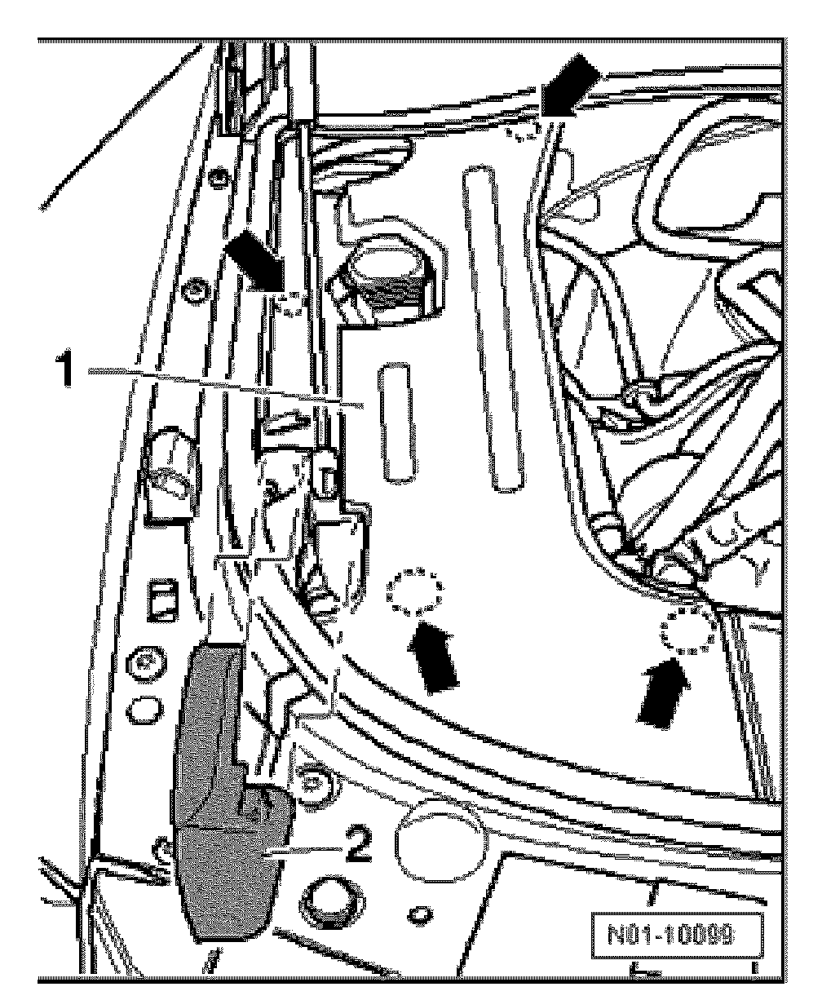
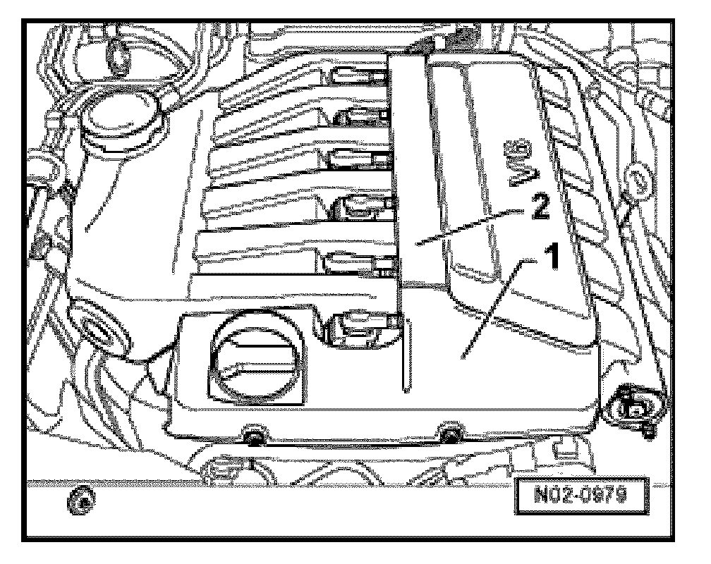
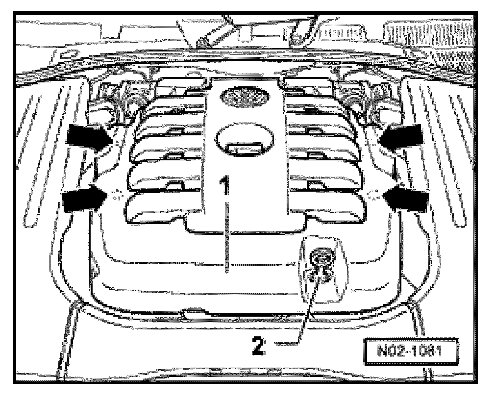

Sound Proofing / Insulation: Service and Repair
Upper engine cover: Removing and Installing
Side engine compartment cover
Remove right engine cover as follows:

- Pry off cover -2-.
- Remove engine cover from catches -arrows- and remove it upward.
Middle engine compartment cover for 6-cyl Gasoline engines

- Unclip engine compartment covers -1- and -2- and remove upward and off.
WARNING! To install engine cover or to engage at mounting points, be sure not to strike the engine cover with a fist or tool, danger of damage.
Middle engine compartment cover for 10-cyl Diesel engines
Removing:

- Remove oil dipstick -2-.
- Unclip cover -1- from catches -arrows- and remove upward.
Installing:
- Set engine cover -1- onto fastening points -arrows- and press it on, until it engages.
- Do not forget oil dipstick -2-.
WARNING! Make sure to not strike the engine cover with a fist or tool when installing the engine cover and engaging the fastening points, there is the risk of damage.